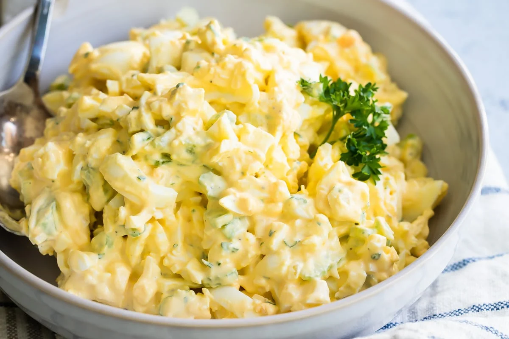

Egg salad Recipe!

Ingredients
Most egg salads are bland, mayo-laden affairs, but this one is vibrant and fresh.
- 6 large eggs
- ¼ cup mayonnaise, best quality such as Hellmann's or Duke's
- 2 teaspoons Dijon mustard
- 1½ teaspoons fresh lemon juice or white wine vinegar
- ¼ teaspoon Worcestershire sauce
- ¼ teaspoon salt
- ⅛ teaspoon ground black pepper
- ½ teaspoon sugar
- ¼ cup finely diced celery, from 1 stalk
- 3 tablespoons finely sliced scallions, from 2 to 3 scallions
- 1 tablespoon finely chopped fresh parsley leaves
Directions
- Place the eggs in a saucepan in a single layer, and fill the pan with enough cold water so that it covers the eggs by about an inch. Bring to a rolling boil over high heat, then remove the pan from the heat, cover, and let stand for 10 minutes.
- Carefully pour out the hot water; place the pan in the sink and run cold water over the eggs until the pan is lukewarm, 1 to 2 minutes. Drain and refill with cold water; let stand until the eggs are room temperature, about 10 minutes. Gently crack the eggs all over and peel under running water. Dry the eggs, then chop into ¼-inch pieces.
- In a medium bowl, whisk together the mayonnaise, mustard, lemon juice, Worcestershire sauce, salt, pepper, and sugar. Add the chopped eggs, celery, scallions, and parsley. Using a rubber spatula, fold to combine. Taste and adjust seasoning, if necessary. Serve or refrigerate until ready to use. (If you refrigerate the egg salad, be sure to taste it again before serving and adjust the seasoning; I find the flavors mellow out a bit after some time in the fridge.)
- Make Ahead: The eggs can be cooked, peeled, and stored in an airtight container in the refrigerator 3 days ahead. If you keep the eggs in their shell, they can last for up to a week. The egg salad will keep well in a covered container in the fridge for about 3 days.